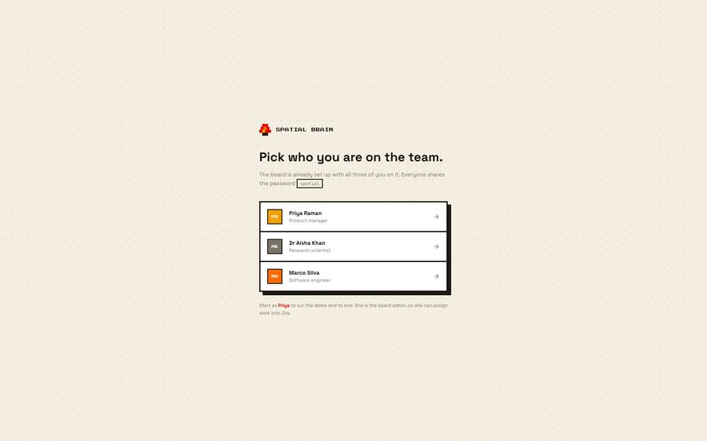
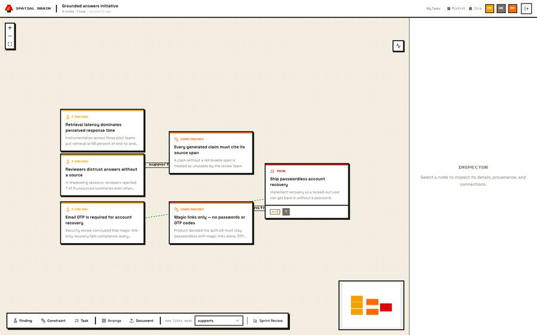
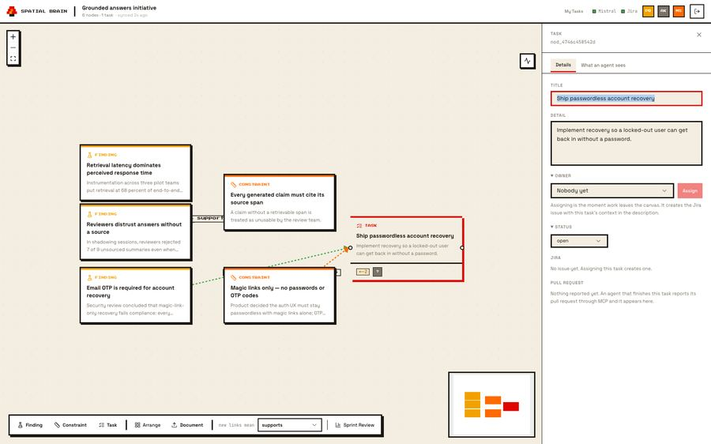
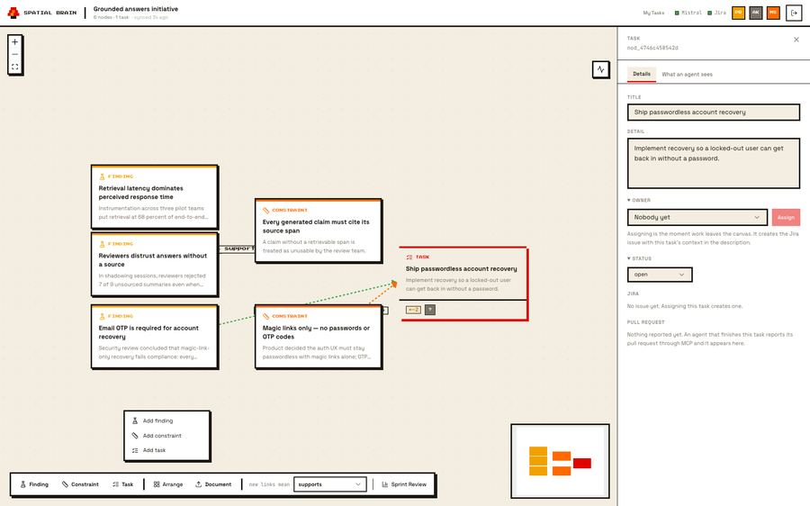

UNSW × Mistral AI × Atlassian — 2026 · Team Kollab
SPATIAL
BRAIN
A research paper becomes a Jira issue becomes a pull request — and every hop stays visible on one canvas.
A research paper becomes a Jira issue becomes a pull request — and every hop stays visible on one canvas.
“How might AI help multi-disciplinary teams make sense of information, present ideas, align on decisions, and review work more effectively?”
The pain: Cross-disciplinary work loses its reasoning in the handoff. A scientist’s finding is retyped into a ticket, the ticket loses the constraint that made it necessary, and the engineer implements something subtly wrong.
AI should package and pressure-test context — not replace judgment.




Human-curated notes with AI assistance layered on top. No agent-facing API — the knowledge stays inside the app.
Built for AI coding agents collaborating in one codebase. Developer-only, not multi-disciplinary humans.
Exposes existing Jira data to agents. Doesn’t generate the reasoning behind a ticket in the first place.
Spatial Brain: AI extracts automatically, with citations. Multi-disciplinary humans and agents. Generates the context, then writes it into Jira — upstream of every competitor listed here.
A graph walk, not an LLM guessing. Plain BFS in lineage.py — Mistral only summarizes a set that’s already deterministically selected.
Every extracted fact carries a verbatim quote, page number, confidence score, and whether a human or a model asserted it.
An agent doesn’t just read context via MCP — it writes back. A reported PR shows up as a badge on the canvas and a Jira comment.
A real Jira Cloud issue via actual REST calls, with ambiguous-timeout handling — not a mock, not a screenshot.
Nothing here is a new place to work.
It is the missing edge between the places people already work.
Spatial Brain — Team Kollab.
UNSW × Mistral AI × Atlassian, 2026.